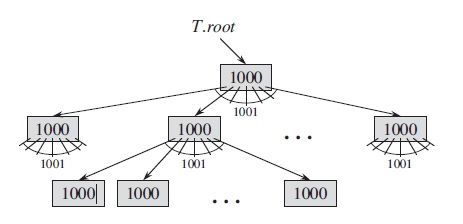
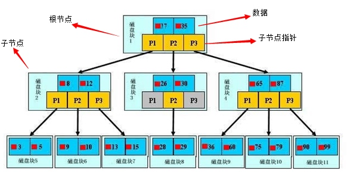
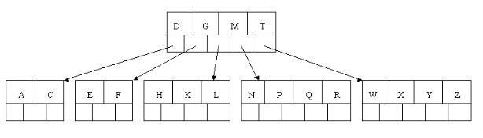
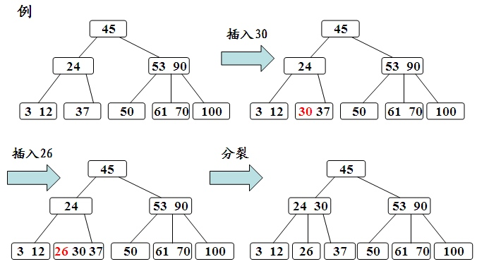
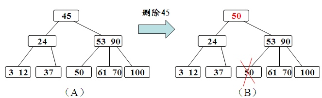

B树的目的是为了硬盘快速读取数据(降低IO操作次数)而设计的一种平衡的多路查找树。目前大多数据库及文件索引，都是使用B树或者B树的变形来存储实现。
为什么B树效率高
在大规模数据存储操作中，由于无法一次性加载到内存里。所以避免不了发生内外存交换。所以次数越少，效率表现也越高。
来看下面这张图：

这是个典型的b树结构，初始因子为1000，高度仅为3的b树，就可以存储1002001000的数据了。
假设要查询最后一个数据:
- 从硬盘加载根节点搜索，IO一次。
- 根据根节点的指针信息，去加载第二层的节点， IO一次。
- 重复2，IO一次。
IO只用了3次，就查询了需要的数据，所以说B树效率是非常高的。
B树的节点，在硬盘里表现为：柱面里的页(page)或盘块(block) ，如果把索引持久化到内存，只需要一次就够了。
B树的高效的前提是数据已排序。
B树结构

这是B树存储在硬盘的逻辑结构图。
其中根节点中17，35在称为关键字(key) ，实际中往往附带更多复杂类型数据。
可以看出一个节点包含 keys ChildNotePointer 2部分信息。

根据这张图介绍下b树的基础定义：
这是颗5阶B树的图，阶简写m。
- 树中每个结点最多含有m个子节点（m>=2）。
- 每个内节点至少 [ceil(m / 2)] 个子节点。 内节点即非根节点非页子节点，也可以叫中间节点。
- 关键字key的数量 [ceil(m / 2)-1]<= n <= m-1，关键字按递增排序。
- 每个叶节点具有相同的深度，即树的高度h，而且不包含关键字信息。
上图也可称为最小度数为3的b树，(degree) ，简写t。
t其实是上面第二条定义中 [ceil(m / 2)] 的值，即t=[ceil(m/2)], 3=ceil(5/2) 。
- 每个非根节点至少有t-1个关键字，非根内节点至少有t个子节点。 t称为度数(degree)，t>=2 。
- 每个节点至多有2t-1关键字，每个内节点最多有2t个子节点。
- 每个叶节点具有相同的深度，即树的高度h，而且不包含关键字信息。
度和阶都是描述子节点的数量的。
算法导论译版中是用度来描述的。
数据结构与算法分析是用阶来描述，网上大多也是。
下面简单的描述实现逻辑。
搜索：从根节点搜索，找到返回，找不到递归子节点。一直搜索到叶子节点，找到返回，找不到则说明key不存在。
//伪代码
entry BTreeSearch(node, key) {
if(node == null)
return null;
for(int i = 0; i < node.keys.length; i++)
{
if(node.keys[i] == key)
return node.data[i];
}
return BTreeSearch(ChildrenNode[i].node,key);
}
var entry = BTreeSearch(root, my_key);
插入：根节点插入，不满直接插入。节点满进行分裂，再满递归分裂。

删除：查询到节点，然后进行删除操作，不满足B数节点的定义则进行节点合并。

更新：查询到子节点，更新数据。
B树缺点
从上面的得知，在查询单条数据是非常快的。但如果范围查的话，b树每次都要从根节点查询一遍。
所以在实际应用中，往往采用b树的变形，b+树来存储，只有叶子节点存储数据，每个叶子节点都指向下一个。